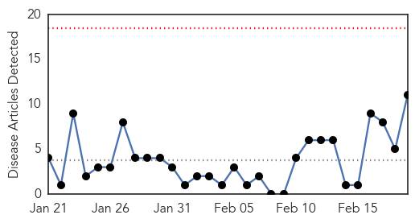
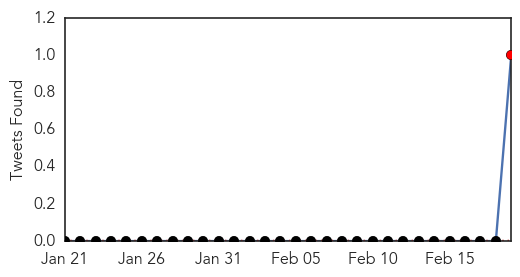
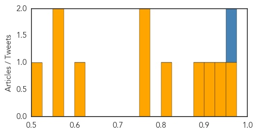

Dengue Fever
30-Day Web Trend
3 alerts, 0 warnings

30-Day Twitter Trend
0 alerts, 0 warnings

Article Locations

Article Confidences

Top Articles:
- 0.997
- Fighting to break the dengue cycle - Nation
- 0.993
- Which ‘Neglected’ Illnesses And Infections Top WHO’s List?
- 0.993
- 86 people struck down with crippling Ross River virus
- 0.986
- Fighting to break the dengue cycle, Others news, Health News, AsiaOne YourHealth
- 0.982
- Mosquito Viruses Are a Biting Concern for Snowbirds
- 0.947
- Cong. Lilia Nuño lauds city health execs for anti-dengue drive success
- 0.914
- Climate change could increase the spread of tropical diseases
- 0.907
- FBC News
- 0.898
- WHO Urges Billions to Fight Neglected Tropical Diseases — Naharnet
- 0.825
- Growing mosquito threat calls for mutant measures
- 0.746
- Mosquito threat persists, yet no entomologists
Top Tweets:
- 0.929
- Flavivirus news: Paper Test Quickly Detects Ebola, Dengue and Yellow Fever - Scientific America... http://t.co/6Par1byJgN pathogenposse
- 0.880
- Paper Test Quickly Detects Ebola, Dengue, And YellowFever http://t.co/19wVU4uua7
Cholera
30-Day Web Trend
0 alerts, 0 warnings

30-Day Twitter Trend
1 alerts, 0 warnings

Article Locations

Article Confidences
Top Articles:
- 0.967
- Malawi: Southern Africa Weekly Report Map, 10 - 16 February 2015
- 0.948
- Southern Africa Weekly Report Map, 10 - 16 February 2015 - Malawi
- 0.912
- Cholera claims four more as toll goes up - Kenya
- 0.885
- Cholera Outbreak: Six dead, eight hospitalized In Ebonyi
- 0.814
- GHS alerts possible cholera outbreak in Brong-Ahafo
- 0.775
- South Sudan Has a Choice... Between Horror and Misery
- 0.760
- In Malakal, South Sudan's Abysmal Tragedy Cannot Be Ignored
- 0.605
- Kenya: Cholera claims four more as toll goes up
- 0.570
- NGO calls on the Methodist church to help champion cholera and Ebola campaign
- 0.558
- Wise Water Foundation calls on Methodist Presiding Bishop
- 0.524
- South Sudan: Update on PAH's activities in South Sudan
Top Tweets:
- 0.951
- Vaccine? RT: "We're on maximum alert the& situation is very complex" Mozambique's DD public health & fears cholera outbreak spread